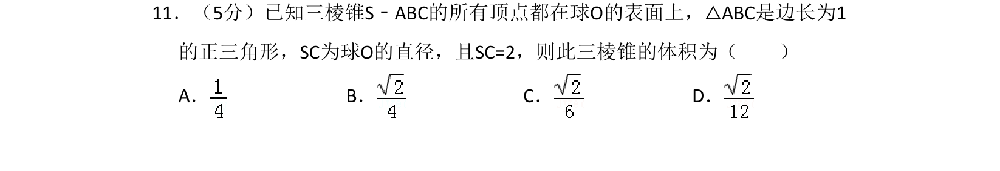
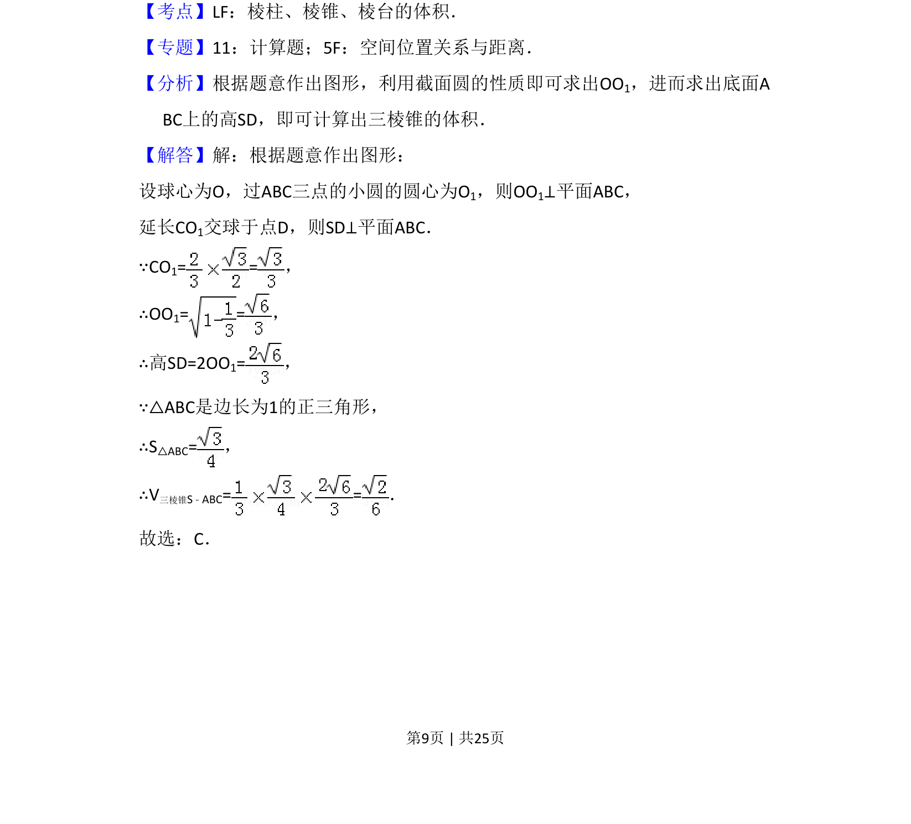
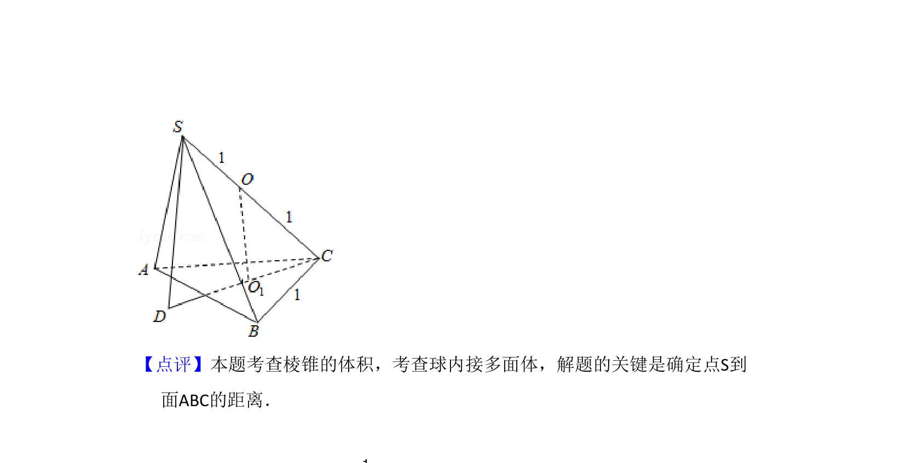

考点：棱锥体积 球内接几何体 截面圆性质

计算球内接三棱锥的体积，利用球心到截面距离求高。


📄 原 PDF 第 9 页：
素材/真题/吉林/2008-2024·（吉林）数学高考真题/2012年高考数学试卷（理）（新课标）（解析卷）.pdf
11．（5分）已知三棱锥S﹣ABC的所有顶点都在球O的表面上，△ABC是边长为1 的正三角形，SC为球O的直径，且SC=2，则此三棱锥的体积为（ ） A．B．C．D．
【考点】LF：棱柱、棱锥、棱台的体积．菁优网版权所有 【专题】11：计算题；5F：空间位置关系与距离． 【分析】根据题意作出图形，利用截面圆的性质即可求出OO1，进而求出底面A BC上的高SD，即可计算出三棱锥的体积． 【解答】解：根据题意作出图形： 设球心为O，过ABC三点的小圆的圆心为O1，则OO1⊥平面ABC， 延长CO1交球于点D，则SD⊥平面ABC． ∵CO1= =， ∴OO1= =， ∴高SD=2OO1=， ∵△ABC是边长为1的正三角形， ∴S△ABC=， ∴V三棱锥S﹣ABC= =． 故选：C．